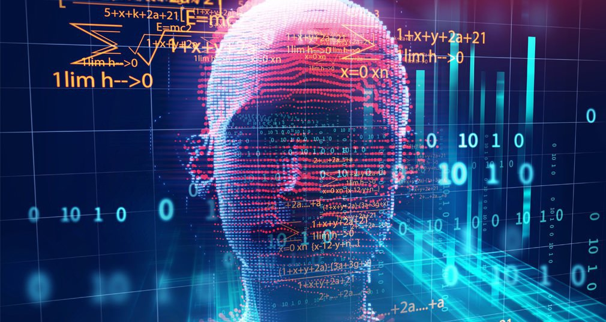

Más conocido sin duda la Deep Blue, la supercomputadora fabricada por IBM que derrotó al gran maestro y campeón del mundo de ajedrez, Garri Kasparov, en 1997. Según Hintze, Deep Blue pertenece al tipo más básico de Inteligencia Artificial que existe en este caso, las máquinas reactivas. Este tipo de AI no tiene la capacidad de almacenar recuerdos ni de utilizar las experiencias del pasado para tomar decisiones. Las máquinas reactivas perciben el mundo directamente y actúan a partir de lo que ven. Su funcionamiento no les exige la creación de un modelo del mundo. Deep Blue puede identificar las piezas en un tablero de ajedrez, hacer predicciones sobre cuáles son los posibles siguientes movimientos de su oponente y elegir las mejores respuestas, pero no sabe nada del pasado o de las experiencias que ha tenido en juegos anteriores. Lo relevante de este tipo de IA es su habilidad para hacer la elección adecuada de entre millones de posibilidades, de acuerdo con la situación inmediata que se les plantea. Tanto Deep Blue como AlphaGo, la computadora creada por Google que ha derrotado ya a varios campeones del juego de mesa japonés Go, son máquinas que no cuentan con una concepción de un mundo más allá de las tareas específicas para las que fueron creadas. Estas máquinas se comportarán siempre de la misma forma cuando encuentren la misma situación. Esto puede asegurar que un sistema de Inteligencia Artificial es confiable, por ejemplo, en el campo de los coches autónomos, de los que se espera sean conductores confiables.
|  |